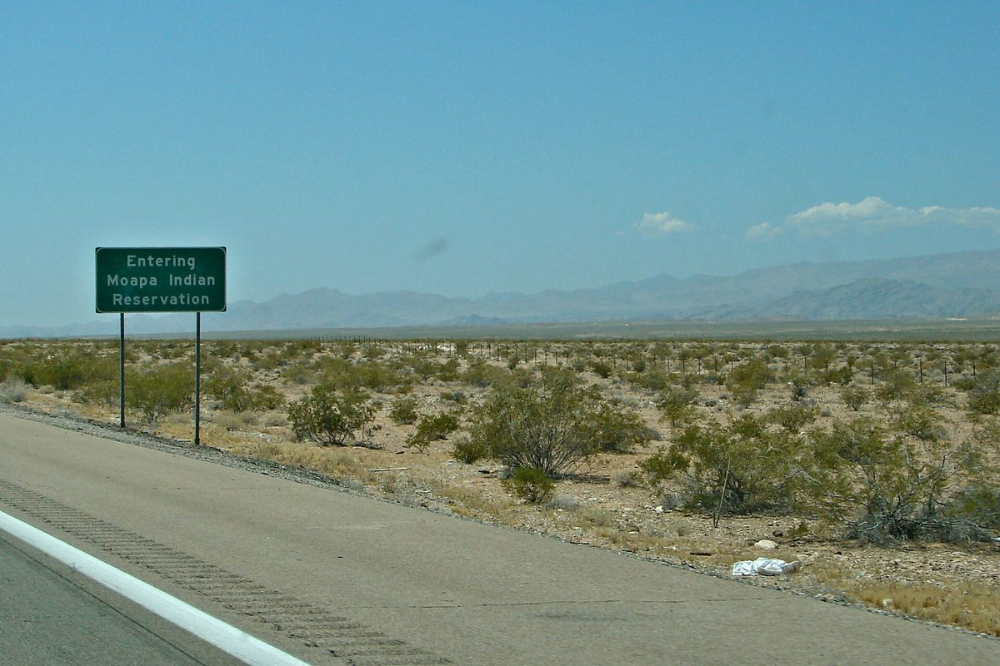

미국 네바다 모아파 파이우트 부족 땅 위 250MW 태양광 10년…50년 임대에 로열티·전기 나눔 없어, 부족장은 다음 사업에 "전력 소유 몫" 추진

원주민 보호구역 안 첫 대형 태양광, 최대 11만1,000가구분 전기는 캘리포니아로…부족은 발전 전기와 발전 수익을 받지 못하고 전기를 따로 사서 써, 이달 네 번째 태양광 착공 예정
미국 네바다주 모아파 파이우트 부족(Moapa Band of Paiutes)의 보호구역에 미국 원주민 보호구역 안 첫 대형 태양광으로 들어선 '모아파 남부 파이우트 태양광 사업'이 발전 10년을 맞았지만, 부족은 이 발전소에서 나는 전기와 발전 수익을 받지 못하고 있다. 약 250MW 규모로 최대 11만1,000가구가 쓸 전기를 만드는 이 발전소는 발전사 아레본 에너지(Arevon Energy)가 부족과 2013년 맺은 50년 토지 임대 계약으로 운영하며, 전기는 캘리포니아의 전력회사들에 팔린다. 계약에는 로열티와 전기 나눔, 보호구역의 에너지 자립을 돕는 계획 등이 들어 있지 않고 임대가 끝난 뒤 발전소를 부족에 넘기는 계획도 없어, 부족은 필요한 전기를 오버턴 전력구(Overton Power District)에서 사서 쓴다. 부족 주민들은 인근 석탄발전소 리드 가드너를 두고 2010년 무렵부터 반대 운동을 벌였고 이 발전소는 2014년 절반, 2017년 완전히 문을 닫았으며, 태양광 10주년 행사는 보호구역의 모아파 빅홀에서 부족 주민과 아레본 직원들이 함께 열었다. 나바호 네이션 출신인 앤드루 컬리 애리조나대 지리학과 부교수는 석탄·석유·가스에 이어 태양광에서도 원주민 땅이 원자재 생산 기반에 머문다며 부가가치는 부족이 아니라 에너지 회사나 발전소 소유자에게 돌아간다고 지적했다. 부족은 이달 네 번째 태양광 착공을 앞두고 있지만 스스로 발전소를 지을 자금은 없는 형편이며, 재닛 마이어스 부족장은 다가올 사업 계약에 "시간이 지나면 전력 일부를 살 수 있게" 해 실제 전력에 부족의 소유 몫이 생기도록 하는 조항을 넣으려 했다고 밝혔다.
시민에너지 관점
250MW 발전소가 10년 동안 돌았는데도 땅을 내준 부족이 전기도 발전 수익도 받지 못했다는 것은, 지역의 땅과 햇빛을 내주는 계약에 소유와 이익 공유를 처음부터 넣지 않으면 50년 동안 되돌리기 어렵다는 것을 보여 준다. 지역 지분 조항이 사업자를 멀어지게 해 개발을 늦춘다는 우려가 나올 수 있지만, 덴마크는 2009년부터 2020년까지 새 풍력발전기 지분의 20% 이상을 지역 주민에게 먼저 내놓도록 의무로 정하고서도 풍력 보급을 이어 갔다. 발전소의 몫을 지역 공동체가 가져야 땅을 내준 공동체가 원자재 공급지에 머물지 않고 에너지 자립의 주체가 될 수 있다. 우리 마을 햇빛발전과 공유지 재생에너지 계약도 임대료에서 멈추지 말고 주민 지분과 수익 배분, 계약이 끝난 뒤 설비를 넘기는 조항을 첫 계약서에 넣어야 한다.
출처: KNPR (Nevada Public Radio) 2026-10-28 Jimmy Romo-Buenrostro 원문 보기
米ネバダ州モアパ・パイユート族の土地に建つ250MW太陽光、10年…50年の賃貸契約にロイヤルティも電気の分配もなく、族長は次の事業で「電力の所有分」を目指す
先住民保留地で初の大規模太陽光、最大11万1,000世帯分の電気はカリフォルニアへ…部族は発電した電気も発電収益も受け取らず電気は別に購入、今月4つ目の太陽光に着工予定
米ネバダ州のモアパ・パイユート族（Moapa Band of Paiutes）の保留地に、米国の先住民保留地で初の大規模太陽光として建てられた「モアパ・サザン・パイユート太陽光事業」が発電開始から10年を迎えたが、部族はこの発電所で生まれる電気も発電収益も受け取っていない。約250MWで最大11万1,000世帯分の電気をつくるこの発電所は、発電事業者アレボン・エナジー（Arevon Energy）が部族と2013年に結んだ50年の土地賃貸契約に基づいて運営しており、電気はカリフォルニアの電力会社に売られている。契約にはロイヤルティや電気の分配、保留地のエネルギー自立を助ける計画などが含まれておらず、賃貸期間終了後に発電所を部族に引き渡す計画もないため、部族は必要な電気をオーバートン電力区（Overton Power District）から購入している。部族の人々は近くの石炭火力発電所リード・ガードナーに対して2010年ごろから反対運動を続け、この発電所は2014年に半分、2017年に完全に閉鎖され、太陽光の10周年行事は保留地のモアパ・ビッグホールで部族の人々とアレボンの社員が共に開いた。ナバホ・ネーション出身のアンドルー・カーリー米アリゾナ大学地理学科准教授は、石炭・石油・ガスに続き太陽光でも先住民の土地は原材料生産の基盤にとどまっており、付加価値は部族ではなくエネルギー会社や発電所の所有者に渡っていると指摘した。部族は今月4つ目の太陽光の着工を控えているが自ら発電所を建てる資金はなく、ジャネット・マイヤーズ族長は、今後の事業の契約に「時がたてば電力の一部を買えるように」して実際の電力に部族の所有分が生まれる条項を入れようとしたと明らかにした。
市民エネルギーの視点
250MWの発電所が10年間動いても、土地を提供した部族が電気も発電収益も受け取れなかったことは、地域の土地と日差しを差し出す契約に所有と利益の共有を最初から盛り込まなければ、50年間取り戻すのが難しいことを示している。地域出資の条項は事業者を遠ざけ開発を遅らせるという懸念もありうるが、デンマークは2009年から2020年まで新しい風力発電機の持ち分の20%以上をまず地元住民に提供するよう義務づけながらも、風力の普及を続けた。発電所の持ち分を地域の共同体が持ってこそ、土地を提供した共同体が原材料の供給地にとどまらず、エネルギー自立の担い手になれる。韓国の村の太陽光発電や共有地の再生可能エネルギー契約も賃料にとどまらず、住民の持ち分と収益配分、契約終了後に設備を引き渡す条項を最初の契約書に盛り込むべきだ。
出典: KNPR (Nevada Public Radio) 2026-10-28 Jimmy Romo-Buenrostro 原文を読む
美国内华达州莫阿帕派尤特部落土地上的250MW光伏运行10年…50年租约无特许权使用费也无电力分享，部落主席争取在下一个项目中获得"电力所有份额"
原住民保留地内首个大型光伏，最多可供11万1,000户的电力卖往加州…部落既得不到所发电力也得不到发电收益，用电需另行购买，本月将动工第四座光伏电站
作为美国原住民保留地内首个大型光伏电站，建在内华达州莫阿帕派尤特部落（Moapa Band of Paiutes）保留地上的"莫阿帕南派尤特光伏项目"已发电10年，但部落既没有得到电站所发的电，也没有得到发电收益。这座约250MW、最多可供11万1,000户用电的电站，由发电企业阿雷文能源（Arevon Energy）依据2013年与部落签订的50年土地租约运营，电力卖给加州的电力公司。租约中没有特许权使用费、电力分享或帮助保留地实现能源自立的计划，也没有租约到期后把电站移交部落的安排，部落所需的电力要向奥弗顿电力区（Overton Power District）购买。部落民众从2010年前后开始反对附近的里德·加德纳燃煤电厂，该电厂在2014年关闭一半、2017年全部关闭；光伏10周年活动由部落民众和阿雷文员工在保留地的莫阿帕大厅共同举办。出身纳瓦霍族的亚利桑那大学地理系副教授安德鲁·柯利指出，继煤炭、石油、天然气之后，在光伏领域原住民的土地仍然只是原材料生产基地，附加值没有留给部落，而是被能源公司或电站所有者拿走。部落本月即将动工第四座光伏电站，但没有自建电站的资金；部落主席珍妮特·迈尔斯表示，部落曾试图在今后项目的合同中加入条款，"随着时间推移能够购买部分电力"，从而在实际电力中拥有部落的所有份额。
市民能源视角
250MW的电站运行了10年，提供土地的部落却既拿不到电也拿不到发电收益，这说明在交出本地土地和阳光的合同里，如果一开始不写进所有权和收益共享，50年内都难以挽回。也许有人担心本地持股条款会吓走开发商、拖慢开发，但丹麦在2009年至2020年间规定新建风机至少20%的股份须优先向当地居民出售，风电依然持续发展。只有本地社区掌握电站的份额，提供土地的社区才不会停留在原材料供应地，而能成为能源自立的主体。韩国的村庄光伏和公有土地可再生能源合同也不应止步于租金，而要在第一份合同里写进居民持股、收益分配以及合同到期后移交设施的条款。
来源: KNPR (Nevada Public Radio) 2026-10-28 Jimmy Romo-Buenrostro 查看原文
Ten years of 250MW solar on Moapa Band of Paiutes land in Nevada: a 50-year lease with no royalties or energy sharing, and a tribal chair seeking "ownership in the actual power" in future deals
The first utility-scale solar farm on a reservation in the US powers up to 111,000 homes in California, while the tribe receives none of the energy or generation revenue and buys its own power elsewhere; a fourth solar farm is due to break ground this month
The Moapa Southern Paiute Solar Project, the first utility-scale solar farm built on a reservation in the United States, has marked ten years of generation on the land of the Moapa Band of Paiutes in Nevada, yet the tribe receives none of the electricity or generation revenue it produces. The roughly 250MW plant, which can power up to 111,000 homes, is run by developer Arevon Energy under a 50-year land lease signed with the tribe in 2013, and its power is sold to utilities in California. The agreement includes no royalties, no energy sharing and no plan to help the reservation become more energy independent, nor any plan to hand the plant to the tribe when the lease ends, so the tribe buys its electricity from the Overton Power District. Tribal members had protested against the nearby Reid Gardner coal-fired power station from around 2010, and the plant closed by half in 2014 and entirely by 2017; the solar farm's tenth anniversary was celebrated by tribal members and Arevon staff at the Moapa Big Hall on the reservation. Andrew Curley, a member of the Navajo Nation and associate professor of geography at the University of Arizona, said that from coal, oil and gas to solar, Indigenous land remains a base for raw commodity production while the added value is captured by energy companies or plant owners rather than by tribes. The tribe is about to break ground on a fourth solar farm this month but cannot afford to build its own plant, and Chairman Janet Myers said the tribe had been trying to write into upcoming contracts that "in time we would be able to purchase some of the power," giving it ownership in the actual power.
Citizen Energy View
That a 250MW plant could run for ten years while the tribe that provided the land received neither power nor generation revenue shows that if ownership and benefit-sharing are not written into a land-and-sunlight deal from the start, they are hard to win back over 50 years. Some may fear that local-ownership clauses scare off developers and slow projects, but Denmark required at least 20% of shares in new wind turbines to be offered first to local residents from 2009 to 2020 and still kept building wind power. Only when the local community holds a stake in the plant can the community that provided the land stop being a mere supplier of raw resources and become the owner of its own energy future. Village solar and renewable energy deals on shared land in Korea should go beyond rent and write residents' shares, revenue distribution and the handover of equipment at the end of the contract into the very first agreement.
Source: KNPR (Nevada Public Radio) 2026-10-28 Jimmy Romo-Buenrostro Read the original